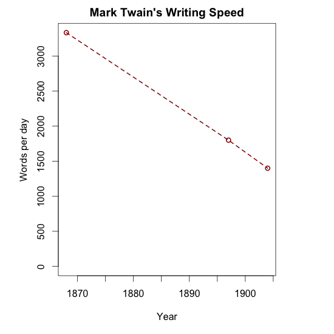
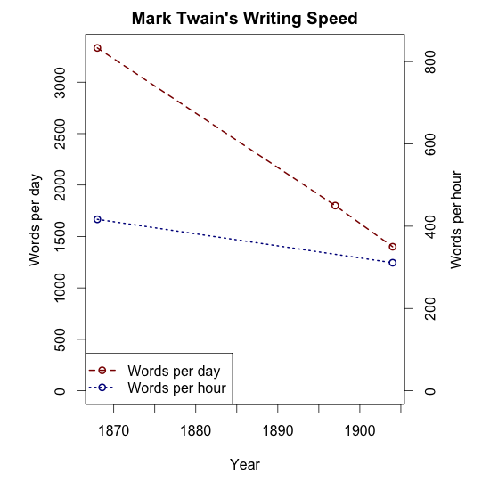

Mark Twain was a stats fan, anything else is a Damn Lie.
At some point or another, many of us have heard the quote popularized by Mark Twain, that "there are three kinds of lies: lies, damned lies, and statistics." For a long time, my response was to snarkily question Twain's statistical training -- I would say that he was writing about something beyond his qualifications (but what did I know, I'm not a writer). It turns out though that Twain's comment was not meant as an attack on overly complicated statistical wizardry that obfuscates the truth. If you read the quote in context, his point is actually quite the opposite.
Here's an extended quote from his autobiography, in all of it's wordy glory. In it he describes the speed of his writing process at different points in his life.
I was very young in those days, exceedingly young, marvelously young, younger than I am now, younger than I shall ever be again, by hundreds of years. I worked every night from eleven or twelve until broad day in the morning, and as I did two hundred thousand words in the sixty days, the average was more than three thousand words a day -— nothing for Sir Walter Scott, nothing for Louis Stevenson, nothing for plenty of other people, but quite handsome for me. In 1897, when we were living in Tedworth Square, London, and I was writing the book called "Following the Equator" my average was eighteen hundred words a day; here in Florence (1904), my average seems to be fourteen hundred words per sitting of four or five hours.
I was deducing from the above that I have been slowing down steadily in these thirty-six years, but I perceive that my statistics have a defect: three thousand words in the spring of 1868 when I was working seven or eight or nine hours at a sitting has little or no advantage over the sitting of to-day, covering half the time and producing half the output. Figures often beguile me, particularly when I have the arranging of them myself; in which case the remark attributed to Disraeli would often apply with justice and force:
"There are three kinds of lies: lies, damned lies, and statistics."
It's beautifully humble, in a few ways. Twain says that when he first looked back on his daily word output over the years, it seemed as if he was gradually losing his edge and slowing down. When he looked closer though, he realized that he hadn't adjusted for the amount of time he spent writing per day. He had the wrong denominator.
To paint this graphically, when Twain looked back at his raw data, he saw a pattern of declining writing speed:

But when he looked closer and adjusted for hours spent writing per day, there was practically no change at all:

Twain isn't arguing against complicated models, he's arguing against models that aren't complex enough to sufficiently interpret the data! He even goes a step further when he says "Figures often beguile me, particularly when I have the arranging of them myself." In other words, if you're in over your head, you should probably consult a statistician.
After all of this time being misinterpreted, there is a part of me that likes to think Twain would be pleased to see his endorsement of rigorous statistical thinking re-expressed in base R graphics.
I only recently found out about the extended quote when it was pointed out to me by Natalie Blades, as we were teaching a set of statistics courses this summer that featured the quote. Benjamin Disraeli, the quote's originator, may have been more dismissive of statistical inference. But Twain's thinking seems to be substantially different.
########### Code for plots ###########
(x<-read.csv('https://aaronjfisher.github.io/blog_supplements/2015-07-26-twain/twain.csv', header=TRUE))
#### Plot 1 - words per day
firstplot<-function(){
par(mar = c(5, 5, 2, 5))
plot(x$year, x$wordsPerDay, type='o', ylim=c(0, max(x$wordsPerDay)),
main="Mark Twain's Writing Speed", ylab='',
xlab='year', col='darkred', lwd=2, lty=2)
mtext(side=2, line=2.5, "words per day")
}
firstplot()
#### Plot 2 - words per hour
firstplot()
par(new=TRUE)
skip<-is.na(x$hrsPerDay)
ylim2<-c(0, 2*max(x$wordsPerDay/x$hrsPerDay, na.rm=TRUE))
plot(x$year[!skip], (x$wordsPerDay/x$hrsPerDay)[!skip],
type='o', axes=FALSE, xlab=NA, ylab=NA, col='darkblue',
lwd=2, ylim=ylim2, lty=3)
axis(side=4)
mtext(side=4, line=2.5, "words per hour")
legend('bottomleft', c('words per day', 'words per hour'),
col=c('darkred', 'darkblue'), lty=c(2, 3), lwd=2, pch=1)